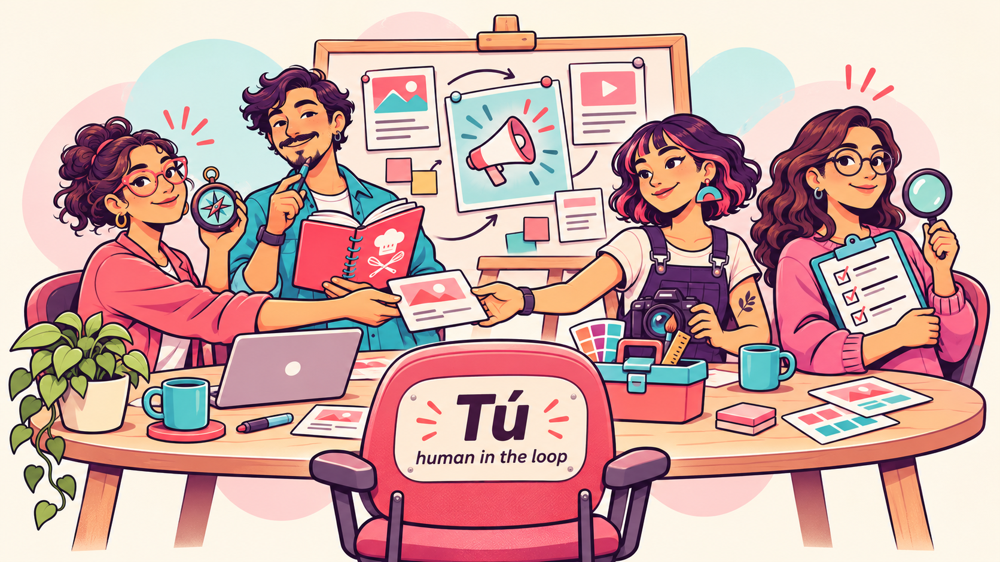
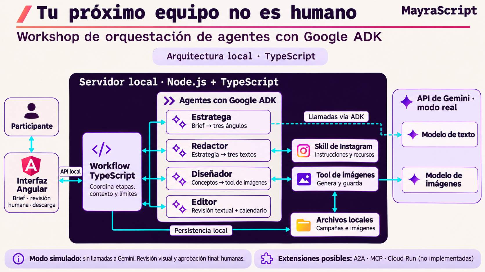
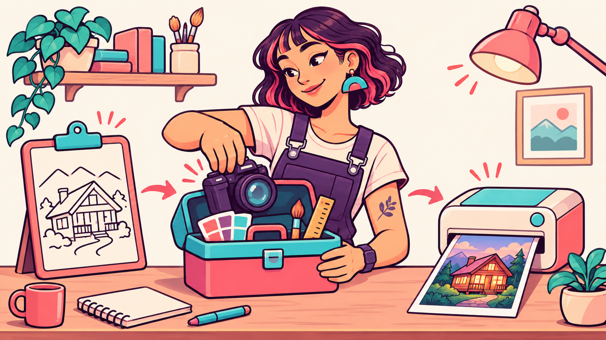

ANTES DE EMPEZAR
Tu próximo equipo no es humano
Workshop de orquestación de agentes con Google ADK
Practica primero con la demo y las comprobaciones offline. Activa Gemini cuando estés listo.

Escanea el QR o comparte el enlace.
mayrascript.github.io/multiagent-adk-workshop/
Construye cuatro agentes con Google ADK y conecta sus resultados con una aplicación de contenido. La interfaz, la API, el guardado y los límites están preparados. Trabajarás en archivos pequeños con TODO numerados, comentarios explicativos y bloques para descomentar o pegar.
El caso práctico es Golden Rentals, una marca ficticia de alojamientos. El nombre del taller es Tu próximo equipo no es humano: lo que aprenderás se puede aplicar a otras marcas y equipos de agentes.
El proyecto del taller
La aplicación, los agentes y los ejercicios están en Golden Rentals Studio. Este repositorio contiene la explicación paso a paso. Clona starter para practicar o consulta main para ver la solución. Esta edición Angular de la guía corresponde a las etiquetas workshop-v2-angular-starter y workshop-v2-angular-solution del proyecto.
Requisitos iniciales
Antes de empezar, instala Node.js 24 LTS (24.13.0 o posterior), npm (incluido con Node.js) pnpm 11.25.0 y Git. Necesitarás una terminal, un editor de código y conexión a Internet para la instalación.
Sigue la verificación e instalación de Node.js, npm, pnpm y Git, con instrucciones para Windows, macOS y Linux, comprobación de versiones y soluciones a errores frecuentes. Puedes realizar la preparación y la demo sin una API key de Gemini.
Los agentes que construirás

Define la dirección
Consulta cómo escribir
Genera la imagen
Revisa el resultado
Un agente combina un modelo, instrucciones y herramientas disponibles para una responsabilidad concreta. En el modo real de este proyecto, el backend ejecuta cada agente con ADK y le entrega el contexto que necesita.
| Agente | Rol | Qué recibe | Qué produce |
|---|---|---|---|
| Estratega de marca | Propone una dirección creativa usando los hechos del brief. | Marca, audiencia, objetivo y hechos disponibles. | Una estrategia y tres ángulos de contenido. |
| Redactor creativo | Redacta publicaciones y consulta la skill de Instagram y sus recursos. | Brief, estrategia e instrucciones de la skill. | Tres textos con gancho, cuerpo, CTA, hashtags y referencias a los hechos. |
| Diseñador | Crea conceptos visuales y solicita imágenes fotorrealistas mediante una tool. | Brief, estrategia y textos de cada pieza. | Prompts, texto alternativo e imágenes generadas con Gemini y guardadas localmente. |
| Editor | Revisa coherencia, hechos y textos; propone un calendario. | Brief, estrategia y piezas actuales. | Revisión textual con APPROVED o NEEDS_REVISION, observaciones y tres fechas dentro de siete días. |
El workflow del backend coordina el orden, pasa el contexto y aplica límites. Es código TypeScript; no es un quinto agente. La persona revisa las imágenes y aprueba la campaña. El Editor no inspecciona píxeles y su APPROVED no sustituye esa aprobación humana.
Así se conecta el equipo

Leer el diagrama paso a paso
Lee el diagrama de izquierda a derecha:
- Participante e interfaz: introduces el brief y después revisas, editas y descargas la campaña.
- Workflow TypeScript: ejecuta estrategia → textos → imágenes → revisión y calendario. También controla el guardado, la cancelación y los límites de ejecución.
- Cuatro agentes ADK: cada uno recibe instrucciones y contexto explícito. El Redactor consulta la skill; el Diseñador solicita la tool de imágenes.
- Modelos y archivos: en modo real, los cuatro agentes llaman a Gemini para texto y la tool llama al modelo de imágenes. Las campañas y las imágenes se guardan en tu computadora. En modo simulado, la demo usa resultados preparados sin contactar a Gemini.
La flecha discontinua hacia el modelo de texto representa al conjunto de los cuatro agentes. El diagrama muestra componentes y conexiones; el orden y las posibles revisiones los decide el workflow.
Diccionario rápido: ADK, tools, skills, MCP y A2A
ADK, tools, skills, MCP y A2A
| Concepto | Para qué sirve | Dónde lo verás |
|---|---|---|
| Google ADK | Framework para definir y ejecutar agentes, gestionar sesiones y conectar sus herramientas. | Construyes un LlmAgent en el paso 2 y lo ejecutas con un Runner. |
| Tool | Función con nombre, descripción y argumentos que el modelo puede solicitar ejecutar. | El Diseñador llama a generate_campaign_image en los pasos 3 y 5. |
| Skill | Instrucciones y recursos reutilizables que se cargan cuando hacen falta. | El Redactor consulta SKILL.md y sus referencias en el paso 4. |
| MCP | Protocolo para conectar aplicaciones de IA con herramientas y datos ofrecidos por servidores externos. | Extensión conceptual: consultar o guardar tareas en Notion mediante un servidor MCP. |
| A2A | Protocolo para que agentes independientes anuncien sus capacidades e intercambien trabajo y resultados. | Extensión conceptual: delegar una tarea en un especialista que corre como servicio separado. |
MCP y A2A son complementarios. Registrar una función local como tool no implica usar MCP; ejecutar varios agentes dentro del mismo proceso no implica usar A2A. Esta edición implementa ADK, tools, skills y orquestación local. Las conexiones A2A, MCP y el despliegue en Cloud Run quedan como posibles ampliaciones.
Recorrido
- Preparar entorno y valores personales.
- Configurar y probar un agente.
- Registrar y llamar una tool.
- Conectar una skill y sus recursos.
- Generar, extraer y guardar una imagen.
- Revisar y validar una salida estructurada.
- Conectar agentes y pasar contexto.
- Crear la campaña y cerrar el ejercicio.
Los comentarios de cada TODO indican qué hace, qué recibe, qué devuelve y qué debería suceder después. Cada página identifica el archivo, los bloques, la comprobación y un error frecuente. Las explicaciones permanecen en el código después de completar el ejercicio.
Cómo trabajar
Realiza este recorrido en la rama starter. La rama main contiene la solución completa con los comentarios explicativos. En ambas, el proyecto está en la raíz del repositorio.
Abre workshop/exercises/. Descomenta el código del TODO indicado y elimina su llamada pending('ID'), o pega el bloque equivalente de la guía. Conserva las firmas y los imports preparados. Ejecuta la comprobación del módulo antes de avanzar.
pnpm workshop:check 4, por ejemplo, ejecuta tu Redactor con respuestas HTTP locales preparadas. Verás las llamadas a la skill; no se contacta a Gemini. Un TODO sin completar devuelve su ID y no se oculta usando la solución.
workshop/solution/ contiene la referencia comentada. Puedes consultarla para recuperarte de un error. --solution prueba explícitamente esa referencia; no certifica los ejercicios que estás completando. Las pruebas normales usan workshop/exercises/.
Consulta el laboratorio para entender qué demuestra cada modo y cómo ejecutar un agente real de forma explícita. Las pruebas offline funcionan sin credenciales. La duración y dificultad del taller deben ajustarse después de un ensayo con participantes.
◷ 20 min estimados · Puedes avanzar a tu ritmo.
Primero, verifica tus herramientas
Verifica que tengas instalados estos paquetes y las versiones recomendadas. Ejecuta cada comando en la terminal que usarás durante el taller. Si ya cumples los requisitos, pasa a instalar el proyecto.
| Herramienta | Comando | Versión recomendada | Para qué sirve |
|---|---|---|---|
| Node.js | node --version |
24 LTS, mínimo 24.13.0 | Ejecuta TypeScript y el servidor. |
| npm | npm --version |
La incluida con Node.js 24 | Instala pnpm. No necesita instalación aparte. |
| pnpm | pnpm --version |
11.25.0 | Instala y ejecuta este proyecto. |
| Git | git --version |
2.43 o posterior | Clona el starter y permite guardar cambios. |
El proyecto fija Node.js y pnpm; Git 2.43 es una recomendación del taller. También necesitas un editor, una terminal y conexión a Internet para las descargas.
Me falta instalar una o más herramientas
A. Instalar Node.js y npm
Windows y macOS — instalador gráfico:
- Abre la página oficial de descarga de Node.js.
- Selecciona la línea 24 LTS y tu sistema operativo. El taller se preparó con Node.js 24.22.1; una versión posterior de la línea 24 también cumple el requisito.
- Descarga el instalador
.msien Windows o.pkgen macOS y sigue el asistente. Conserva la instalación de npm y la opción de agregar los comandos al PATH si aparece. - Cierra y vuelve a abrir la terminal. Si utilizas la terminal integrada de VS Code, reinicia también el editor.
Linux — instalación con nvm:
Si ya instalaste Node.js con el instalador gráfico, continúa en Comprueba Node.js y npm. Los comandos nvm install y nvm use corresponden a la alternativa con nvm.
nvm permite instalar Node.js para tu usuario. Este método también sirve en macOS, especialmente si una instalación global produce errores de permisos. En una terminal Bash o Zsh, instala nvm con el comando de su documentación oficial:
curl -o- https://raw.githubusercontent.com/nvm-sh/nvm/v0.41.0/install.sh | bashCierra y vuelve a abrir la terminal para cargar nvm. Después instala y activa Node.js 24:
nvm install 24
nvm use 24Comprueba Node.js y npm en cualquier sistema:
node --version
npm --versionResultado esperado: Node.js muestra una versión v24.x.x igual o superior a v24.13.0, y npm muestra un número de versión. npm ya está instalado con Node.js; no necesitas instalarlo por separado. Si ya usas una versión posterior de Node.js, el proyecto declara un mínimo de 24.13.0; para seguir el entorno del taller recomendamos la línea 24.
B. Instalar pnpm
Cuando node y npm funcionen, ejecuta:
npm install --global pnpm@11.25.0
pnpm --versionResultado esperado: 11.25.0. La instalación se realiza una vez por entorno de Node.js. El proyecto usa una versión concreta para que todos trabajemos con el mismo gestor de dependencias. Consulta la instalación oficial de pnpm si necesitas otra forma de instalarlo.
C. Instalar Git
- Windows: descarga y ejecuta Git for Windows. Conserva la opción que permite usar Git desde la terminal.
- macOS: ejecuta
xcode-select --instally completa el asistente. Si ya usas Homebrew, puedes instalar Git conbrew install git. - Ubuntu / Debian: ejecuta
sudo apt updatey despuéssudo apt install git. - Otros Linux: usa el gestor de tu distribución siguiendo la guía oficial.
Abre una terminal nueva y ejecuta git --version. Recomendamos Git 2.43 o posterior para el taller; no hay un mínimo específico impuesto por el código. Git descarga y versiona los archivos; no necesitas configurar tu correo para clonar el repositorio público.
D. Comprobar antes de continuar
Ejecuta estos cuatro comandos en la misma terminal que usarás para el workshop:
node --version
npm --version
pnpm --version
git --versionSi los cuatro muestran sus versiones, puedes pasar a Instalar y ejecutar el proyecto. La preparación todavía no requiere una API key de Gemini.
Si aparece un error
| Mensaje o situación | Cómo resolverlo |
|---|---|
node, npm o pnpm no se reconoce / command not found |
Cierra y abre la terminal; reinicia VS Code si lo usas. Comprueba que terminaste la instalación de Node.js antes de instalar pnpm. |
| Node.js es anterior a 24.13.0 | Instala la línea 24 LTS. Si usas nvm, ejecuta nvm install 24 y nvm use 24. |
nvm: command not found / zsh: command not found: nvm |
En MacBook, sigue el apartado MacBook: Zsh no encuentra nvm, debajo de esta tabla. También encontrarás enlaces para otros entornos. |
EACCES / permiso denegado al instalar pnpm en macOS o Linux |
Usa la instalación por usuario con nvm del apartado A, activa Node.js 24 y repite la instalación de pnpm. |
PowerShell bloquea npm.ps1 o pnpm.ps1 |
Abre Símbolo del sistema (cmd) y ejecuta allí los comandos del taller. |
git no se reconoce |
Termina la instalación del apartado C y abre una terminal nueva. El ZIP sirve como alternativa temporal para descargar el código. |
MacBook: Zsh no encuentra nvm
Si al ejecutar nvm use 24 aparece:
zsh: command not found: nvmLa terminal no tiene nvm disponible: puede faltar la instalación o su carga en Zsh. El instalador .pkg de Node.js no instala nvm. Si node --version cumple el requisito y npm --version funciona, puedes continuar instalando pnpm.
Si elegiste usar nvm:
- Carga la configuración de Zsh y comprueba si reconoce nvm.
touchcrea el archivo si falta y conserva su contenido si existe:
touch "$HOME/.zshrc"
source "$HOME/.zshrc"
command -v nvm- Si no imprime
nvm, ejecuta el instalador oficial indicando el archivo que Zsh debe cargar:
curl -o- https://raw.githubusercontent.com/nvm-sh/nvm/v0.41.0/install.sh | PROFILE="$HOME/.zshrc" bash
source "$HOME/.zshrc"
command -v nvmSi falla por Git o las herramientas de Xcode, ejecuta xcode-select --install, completa el asistente y repite el paso 2.
- Cuando imprima
nvm, instala y activa Node.js; después prepara pnpm:
nvm install 24
nvm use 24
node --version
npm --version
npm install --global pnpm@11.25.0
pnpm --version
git --versionAbre una terminal nueva y comprueba otra vez command -v nvm. Si utilizas VS Code, reinícialo.
Ayuda por entorno:
- macOS y Zsh: solución oficial de nvm.
- Linux, Bash y Zsh: solución oficial de nvm.
- Windows con PowerShell o cmd: problemas frecuentes de NVM for Windows. Es una herramienta distinta; el bloque de Zsh no se usa allí.
Referencia: instalar Node.js y npm.
Ya las tengo, pero mis versiones son antiguas
Actualiza Node.js y npm
Con nvm en macOS o Linux, ejecuta nvm install 24 y nvm use 24. Si usaste un instalador gráfico, descarga de nuevo la línea 24 LTS desde Node.js y completa el asistente. No necesitas instalar nvm para actualizar con el instalador. npm se actualiza junto con Node.js.
Alinea pnpm con el proyecto
npm install --global pnpm@11.25.0
pnpm --versionRepite este paso después de cambiar de versión de Node.js si pnpm deja de aparecer.
Actualiza Git
En Windows, usa el instalador oficial de Git; en macOS, actualiza las herramientas de línea de comandos de Apple o usa brew upgrade git si tu instalación pertenece a Homebrew. En Ubuntu / Debian, usa sudo apt update y sudo apt install --only-upgrade git.
Abre una terminal nueva y repite los cuatro comandos de la tabla. Si falla alguno, abre el desplegable anterior: conserva las soluciones de permisos, PowerShell y nvm en Zsh.
Instalar y ejecutar el proyecto
- Clona la rama
starterpara realizar el taller. Ejecuta desde una terminal:
git clone --branch starter https://github.com/mayrascript/golden-rentals-studio.git golden-rentals-studio
cd golden-rentals-studioEl proyecto está en la raíz de la carpeta clonada. Si descargas un ZIP desde GitHub, selecciona primero la rama starter. Para consultar la solución completa con comentarios, abre la rama main.
- Desde la carpeta que contiene
package.json, ejecuta:
pnpm install --frozen-lockfile
pnpm workshop:check setup
pnpm devAbre la dirección que imprima el servidor. La rama starter usa el puerto 4319; main usa 4317. Puedes cambiarlos en .env. Ejecuta una campaña simulada para conocer el resultado que construirás.
Consultar la solución en una carpeta separada
Para ejecutar la solución sin modificar tus ejercicios, clónala en una carpeta distinta:
git clone --branch main https://github.com/mayrascript/golden-rentals-studio.git golden-rentals-solution
cd golden-rentals-solution
pnpm install --frozen-lockfile
pnpm devTODO 1.1 · Crear tu configuración local
Duplica .env.example y nombra la copia .env, si todavía no existe. Si ya tienes uno, conserva sus valores. Los comentarios de la plantilla explican para qué sirve cada campo.
| Valor | Qué significa | Qué debes completar |
|---|---|---|
GENERATION_MODE |
Proveedor usado por la web | Mantén simulated durante la preparación |
GOOGLE_GENAI_API_KEY |
Credencial personal para Gemini | Se completa únicamente al probar el modo real |
TEXT_MODEL |
Modelo de los agentes | La plantilla trae el identificador seleccionado |
IMAGE_MODEL |
Modelo llamado por la tool de imágenes | La plantilla trae el identificador seleccionado |
PORT |
Dirección local del servidor | Cambia el número si el puerto está ocupado |
Esta edición usa Gemini mediante API key y guarda archivos localmente. No solicita nombre de proyecto de Google Cloud, región, bucket ni IDs de Notion. Esos campos corresponderían a módulos de nube o MCP.
TODO 1.2 · Elegir el modo de prueba
Los ejercicios empiezan con pnpm workshop:check NUMERO, sin consumo de IA. Mantén GENERATION_MODE=simulated hasta completar los módulos. El laboratorio permite probar un agente real antes de integrar toda la web.
Resultado esperado: la interfaz abre y produce una campaña simulada, y la comprobación setup termina sin mostrar credenciales.
◷ 20 min estimados · Puedes avanzar a tu ritmo.
Antes del código: qué hace Google ADK
ADK conecta un modelo con instrucciones, herramientas y una sesión. Primero entiende la estructura de cualquier agente; luego la adaptaremos al Estratega.
Características principales
- Enfoque modular y de software. Defines agentes, herramientas y flujos mediante código, con componentes que puedes reutilizar y probar. Hay SDK para Python, TypeScript, Go, Java y Kotlin. Lenguajes y ejemplos oficiales.
- Flexibilidad de modelos y despliegue. Puedes usar Gemini u otros modelos mediante las integraciones compatibles, como LiteLLM en ADK Python o modelos disponibles en Vertex AI. Puedes ejecutar los agentes en local, empaquetarlos con Docker y desplegarlos en Cloud Run o GKE. Modelos · Despliegue.
- Orquestación y flujos de trabajo. Combina especialistas en secuencia, en paralelo o en bucle. También admite delegación y enrutamiento dinámico mediante un LLM. Orquestación en ADK.
- Herramientas y MCP. Conecta funciones propias, búsqueda web, ejecución de código y herramientas o fuentes de datos externas mediante Model Context Protocol (MCP), según el SDK y el modelo utilizados. Herramientas MCP.
- Pruebas y depuración local. La CLI y la Web UI permiten conversar con los agentes e inspeccionar eventos, llamadas a herramientas, estado y trazas de ejecución. Encontrarás comandos como
adk runyadk web; la forma de invocarlos depende del SDK. Interfaz web de ADK.
Qué capacidades usamos aquí y cuáles puedes explorar después
En este taller defines cuatro agentes con LlmAgent, conectas una tool y una skill, y ejecutas un workflow coordinado por código TypeScript. La persona revisa las imágenes y aprueba la campaña: participa en el proceso como human in the loop.
Los agentes de flujo de ADK, la delegación dinámica, MCP y el despliegue en la nube son posibilidades del framework que puedes explorar después. El workflow de este proyecto fija el orden en código; no usa SequentialAgent, ParallelAgent ni LoopAgent.
Las capacidades no son idénticas en todos los lenguajes. Por ejemplo, el conector LiteLLM documentado por ADK corresponde a Python; este proyecto TypeScript conecta directamente con Gemini. Revisa siempre la compatibilidad del SDK que uses.
La ficha de un agente, sin un caso de negocio
import { LlmAgent } from '@google/adk';
export const rootAgent = new LlmAgent({
name: 'asistente',
model: process.env.TEXT_MODEL!,
description: 'Explica conceptos al usuario con ejemplos breves.',
instruction: 'Explica el concepto solicitado en español. Usa un ejemplo y señala lo que no sabes.',
tools: [],
});Este ejemplo muestra la definición. Para ejecutarlo necesitas un modelo válido en TEXT_MODEL, una credencial configurada y un Runner o ADK Web. El signo ! de TypeScript no valida una variable de entorno: en el proyecto, la configuración se comprueba antes de ejecutar.
| Parámetro | Analogía | ¿Es obligatorio en ADK TypeScript 2.4? | Qué debes decidir |
|---|---|---|---|
name |
Credencial del especialista | Sí | Identificador válido, único en el árbol de agentes; no uses user. |
model |
Motor con el que piensa | Necesario al ejecutar, aquí lo configuramos explícitamente | Puede omitirse al construir y resolverse por herencia o configuración admitida por ADK. Un agente independiente necesita un modelo resuelto. |
description |
Cargo en el directorio del equipo | Opcional; muy útil para delegar | Una frase que permita decidir cuándo llamar a este especialista. |
instruction |
Encargo y reglas de trabajo | Opcional en la API; necesario para orientar este taller | Rol, tarea, límites, formato esperado y uso de herramientas. |
tools |
Caja de herramientas | Opcional; por defecto vacía | Funciones o toolsets que podrá solicitar. Registrarlas no las ejecuta. |
generateContentConfig |
Ajustes de trabajo | Opcional | Límites de salida y opciones compatibles con el modelo. |
| Callbacks | Controles antes y después | Opcionales | Registrar consumo, comprobar límites o revisar resultados. |
De mensaje a resultado
Tu mensaje → Runner + sesión → agente y modelo → respuesta.
Si el modelo necesita una herramienta: solicita la tool → ADK ejecuta la función → el resultado vuelve al modelo. Las skills aportan instrucciones y recursos mediante un SkillToolset; no existe un parámetro skills en este ejemplo.
Qué va en description y qué va en instruction
description resume la responsabilidad del agente en una frase. instruction desarrolla el encargo: incluye especialidad, restricciones, pasos y formato de salida.
La diferencia no es la longitud, sino la función: description permite identificar al especialista y instruction guía su trabajo. En un sistema con delegación, otro agente puede leer esa descripción para seleccionar a quién llamar. En este proyecto el workflow fija el orden, así que la descripción no decide el enrutamiento.
El Estratega de este workshop trabaja con los hechos del brief, usa TypeScript y configura tools: []. Su descripción resume esa responsabilidad y sus instrucciones especifican cómo producir la estrategia.
Ahora sí: la ficha del Estratega
| Ficha genérica | En este workshop | Por qué |
|---|---|---|
Identidad: name |
strategist |
El workflow identifica a este especialista. |
Motor: model |
Viene de ...settings |
Comparte configuración y límites preparados. |
Cargo: description |
Propone tres ángulos a partir de los hechos del brief. | Resume su responsabilidad. |
Encargo: instruction |
BASE_INSTRUCTION + estrategia breve + tres ángulos |
Combina reglas comunes con su tarea específica. |
Herramientas: tools |
[] |
Trabaja con información aportada, sin buscar en Internet. |
Documentación: primer agente en TypeScript y agentes LLM. La obligatoriedad anterior se contrastó con los tipos de @google/adk 2.4.0 instalados en este proyecto.
Construye el Estratega
En este taller configuramos un modelo, un nombre y unas instrucciones. La descripción resume su responsabilidad. El Runner crea una sesión, envía el brief y recoge la respuesta. Crear el objeto del agente no envía solicitudes al proveedor.
Abre workshop/exercises/02-strategist.ts y lee los comentarios de los TODO 2.1 y 2.2. Completa primero la instrucción y luego el agente. El laboratorio aportará un brief ficticio; el código de la sesión ya está preparado en workshop/lab.ts.
Después de comprobar el bloque base, cambia la instrucción para pedir tres ángulos más distintos. El laboratorio offline verifica la conexión y el contrato con respuestas fijas. Para evaluar el efecto de tu nueva instrucción necesitas una ejecución real.
Bloques para completar
Abre workshop/exercises/02-strategist.ts. Para cada TODO, lee los comentarios sobre entradas y salidas. Descomenta el bloque que ya aparece en el archivo y elimina su llamada pending('ID'), o reemplaza el tramo entre @todo:start y @todo:end por el bloque siguiente. Conserva los imports y las firmas.
TODO 2.1
Pega dentro de la función correspondiente:
return `${BASE_INSTRUCTION} Formula una estrategia breve y tres ángulos distintos. No hagas investigación de mercado.`;TODO 2.2
Pega dentro de la función correspondiente:
return new LlmAgent({
...settings,
name: 'strategist',
description: 'Propone tres ángulos a partir de los hechos del brief.',
instruction: strategistInstruction(),
tools: [],
});Comprobar
pnpm typecheck
pnpm workshop:check 2Esta comprobación usa respuestas HTTP locales preparadas, sin clave ni consumo de IA. Ejecuta ADK y las funciones que completaste; no evalúa la calidad de Gemini. Para probar ese agente con el proveedor real, consulta el laboratorio.
Prueba con tus propias instrucciones
Abre el laboratorio con ADK Web, selecciona strategist y envía el prompt de ejemplo. Modifica la instrucción, reinicia el laboratorio y compara en una sesión nueva. Esta práctica real es opcional: requiere tu credencial y consume API.
◷ 15 min estimados · Puedes avanzar a tu ritmo.

Una función TypeScript tiene código ejecutable. Una FunctionTool agrega el nombre, la descripción y el esquema de argumentos que ADK entrega al modelo. Registrarla en tools permite que el agente solicite su ejecución. El modelo propone los argumentos; ADK valida el esquema y ejecuta la función.
Abre workshop/exercises/03-tools.ts. Lee imageParameters: los campos y sus descripciones explican qué debe entregar el modelo. Completa el TODO 3.1 para crear la herramienta y el TODO 3.2 para conectarla al Diseñador.
En este primer ejercicio execute devuelve un resultado técnico fijo. Es deliberado: permite aprender el protocolo antes de generar una imagen. En el módulo 5 se conecta la misma herramienta con Gemini y el almacenamiento.
Observa dos líneas en la terminal: → llamada generate_campaign_image con pieceId, prompt y altText, y ← resultado generate_campaign_image con status: saved. En modo offline la respuesta del modelo que solicita esa tool también está preparada; ADK sí ejecuta tu función.
Bloques para completar
Abre workshop/exercises/03-tools.ts. Para cada TODO, lee los comentarios sobre entradas y salidas. Descomenta el bloque que ya aparece en el archivo y elimina su llamada pending('ID'), o reemplaza el tramo entre @todo:start y @todo:end por el bloque siguiente. Conserva los imports y las firmas.
TODO 3.1
Pega dentro de la función correspondiente:
return new FunctionTool({
name: 'generate_campaign_image',
description: 'Genera y guarda una imagen fotorrealista de un alojamiento ficticio para una pieza existente. Una llamada por pieza; no documenta una propiedad real.',
parameters: imageParameters,
execute,
});TODO 3.2
Pega dentro de la función correspondiente:
return new LlmAgent({
...settings,
name: 'designer',
description: 'Diseña escenas fotográficas y solicita su generación mediante una herramienta.',
instruction: `${BASE_INSTRUCTION} Crea escenas fotográficas distintas y coherentes con cada pieza, los hechos y la paleta. ${PHOTO_STYLE} Usa generate_campaign_image una vez por cada pieza que no tenga imagen. Entrega un altText que describa la escena y la identifique como imagen generada por IA de un alojamiento ficticio.`,
tools: [imageTool],
});Comprobar
pnpm typecheck
pnpm workshop:check 3Esta comprobación usa respuestas HTTP locales preparadas, sin clave ni consumo de IA. Ejecuta ADK y las funciones que completaste; no evalúa la calidad de Gemini. Para probar ese agente con el proveedor real, consulta el laboratorio.
◷ 20 min estimados · Puedes avanzar a tu ritmo.
Abre skills/instagram-copy/SKILL.md y skills/instagram-copy/references/estructuras.md. El primer archivo define la skill y sus instrucciones; el segundo contiene estructuras que el Redactor puede consultar cuando las necesita.
En workshop/exercises/04-skills.ts, completa tres pasos: leer la carpeta con loadSkillFromDir, crear un SkillToolset y registrarlo en tools. Los imports están preparados para que el archivo compile desde el inicio; sus usos aparecen en los bloques comentados.
La comprobación debe mostrar load_skill y luego load_skill_resource, antes de recibir tres textos. Cargar un archivo al arrancar Node y observar que el agente lo consulta son comprobaciones distintas; el laboratorio cubre ambas.
Después, personaliza una regla de tono en SKILL.md y compara resultados en una ejecución real. El modo offline utiliza respuestas fijas y no mide calidad de escritura.
Bloques para completar
Abre workshop/exercises/04-skills.ts. Para cada TODO, lee los comentarios sobre entradas y salidas. Descomenta el bloque que ya aparece en el archivo y elimina su llamada pending('ID'), o reemplaza el tramo entre @todo:start y @todo:end por el bloque siguiente. Conserva los imports y las firmas.
TODO 4.1
Pega dentro de la función correspondiente:
return await loadSkillFromDir(directory);TODO 4.2
Pega dentro de la función correspondiente:
return new SkillToolset([skill], { allowInlineScripts: false });TODO 4.3
Pega dentro de la función correspondiente:
return new LlmAgent({
...settings,
name: 'copywriter',
description: 'Redacta tres publicaciones usando la estrategia y la skill de Instagram.',
instruction: `${BASE_INSTRUCTION} Carga la skill instagram-copy y su recurso references/estructuras.md antes de redactar. Produce gancho, cuerpo, CTA, hashtags y referencias a hechos.`,
tools: [skillTools],
beforeToolCallback: ({ tool }) => {
check();
if (!['load_skill', 'load_skill_resource'].includes(tool.name)) throw new Error('Herramienta no disponible en este workshop.');
return undefined;
},
});Comprobar
pnpm typecheck
pnpm workshop:check 4Esta comprobación usa respuestas HTTP locales preparadas, sin clave ni consumo de IA. Ejecuta ADK y las funciones que completaste; no evalúa la calidad de Gemini. Para probar ese agente con el proveedor real, consulta el laboratorio.
◷ 20 min estimados · Puedes avanzar a tu ritmo.
El agente de texto elabora el concepto y llama a generate_campaign_image. La función del servidor construye el prompt fotográfico, solicita la imagen, lee la respuesta y guarda el archivo. La referencia del archivo vuelve a ADK como resultado de la tool.
Abre workshop/exercises/05-images.ts. Completa la llamada al modelo (5.1), la extracción de bytes (5.2) y el guardado (5.3). Las imágenes se guardan en disco local. El cálculo de dimensiones, checksum, historial y límites está preparado en el proveedor de la aplicación.
La respuesta puede incluir texto, partes internas y una imagen final. La prueba incluye una parte interna deliberadamente distinta: extraer la primera imagen sin comprobar thought hará fallar el ejercicio. El PNG offline tiene un solo píxel; comprueba el mecanismo, no el aspecto fotográfico.
En una prueba real se solicita solo una imagen. Se aplica el prompt de packages/providers/image-prompt.ts: luz natural, materiales con textura, proporciones plausibles y aviso de alojamiento ficticio fuera de la imagen.
Bloques para completar
Abre workshop/exercises/05-images.ts. Para cada TODO, lee los comentarios sobre entradas y salidas. Descomenta el bloque que ya aparece en el archivo y elimina su llamada pending('ID'), o reemplaza el tramo entre @todo:start y @todo:end por el bloque siguiente. Conserva los imports y las firmas.
TODO 5.1
Pega dentro de la función correspondiente:
return await client.models.generateContent({
model, contents: prompt,
config: {
responseModalities: ['TEXT', 'IMAGE'],
imageConfig: { aspectRatio: '1:1', imageSize: '1K' },
maxOutputTokens: 4096, automaticContinuation: false,
httpOptions: { timeout: 120000, retryOptions: { attempts: 1 } },
},
});TODO 5.2
Pega dentro de la función correspondiente:
const data = response.candidates?.[0]?.content?.parts?.find(part => !part.thought && part.inlineData?.mimeType?.startsWith('image/'))?.inlineData;
if (!data?.data || !data.mimeType || !['image/png', 'image/jpeg'].includes(data.mimeType)) {
throw new AppError('El modelo no entregó una imagen PNG o JPEG.');
}
return { bytes: Buffer.from(data.data, 'base64'), mimeType: data.mimeType };TODO 5.3
Pega dentro de la función correspondiente:
await store.writeAsset(campaignId, relativePath, bytes);Comprobar
pnpm typecheck
pnpm workshop:check 5Esta comprobación usa respuestas HTTP locales preparadas, sin clave ni consumo de IA. Ejecuta ADK y las funciones que completaste; no evalúa la calidad de Gemini. Para probar ese agente con el proveedor real, consulta el laboratorio.
◷ 15 min estimados · Puedes avanzar a tu ritmo.
Abre packages/contracts/index.ts y localiza editorSchema. Define una revisión y exactamente tres entradas del calendario. TypeScript ayuda al escribir código; Zod valida valores que llegan durante la ejecución.
En workshop/exercises/06-editor.ts, configura el agente (6.1) y completa el parseo y validación (6.2). JSON.parse rechaza JSON mal formado; editorSchema.parse rechaza datos con campos o valores incorrectos. El laboratorio prueba también un JSON sintácticamente válido pero incompleto.
La aplicación solicita JSON mediante instrucciones y valida la respuesta con Zod al recibirla. Enviar un esquema al proveedor para restringir la generación es una técnica adicional; no sustituye la validación de la respuesta en la aplicación.
El Editor revisa textos y metadatos. HUMAN_REQUIRED deja explícito que la persona revisa los píxeles. APPROVED en la respuesta automática todavía no constituye aprobación humana.
Bloques para completar
Abre workshop/exercises/06-editor.ts. Para cada TODO, lee los comentarios sobre entradas y salidas. Descomenta el bloque que ya aparece en el archivo y elimina su llamada pending('ID'), o reemplaza el tramo entre @todo:start y @todo:end por el bloque siguiente. Conserva los imports y las firmas.
TODO 6.1
Pega dentro de la función correspondiente:
return new LlmAgent({
...settings,
name: 'editor',
description: 'Revisa hechos y textos y propone un calendario de siete días.',
instruction: `${BASE_INSTRUCTION} Revisa coherencia, hechos y variedad; propone tres fechas dentro de siete días. No inspeccionas píxeles: visualInspection siempre es HUMAN_REQUIRED. APPROVED significa solo revisión automática textual, nunca aprobación humana.`,
});TODO 6.2
Pega dentro de la función correspondiente:
const json = JSON.parse(text.trim().replace(/^```(?:json)?\s*/i, '').replace(/\s*```$/, ''));
return editorSchema.parse(json);Comprobar
pnpm typecheck
pnpm workshop:check 6Esta comprobación usa respuestas HTTP locales preparadas, sin clave ni consumo de IA. Ejecuta ADK y las funciones que completaste; no evalúa la calidad de Gemini. Para probar ese agente con el proveedor real, consulta el laboratorio.
◷ 15 min estimados · Puedes avanzar a tu ritmo.
Abre workshop/exercises/07-workflow.ts. En el TODO 7.1 construyes los cuatro agentes usando las funciones de los módulos anteriores. La función de imágenes viene del proveedor y se registra como herramienta del Diseñador.
En el TODO 7.2 preparas el mensaje de cada etapa. El Redactor recibe la estrategia porque el workflow la incluye explícitamente. El Editor recibe las piezas actuales. El modelo no recibe el historial de versiones ni la aprobación humana.
El orden ya está preparado en apps/server/src/workflow/service.ts: estrategia → textos → imágenes → revisión y calendario. Ese código conserva persistencia, cancelación y límites. El workflow coordina a los cuatro agentes dentro del mismo proceso local.
En ambos paquetes del taller, apps/server/src/agents/team.ts y packages/providers/adk.ts están conectados a estos ejercicios. Los cambios sí llegan al modo real de la web. El modo simulado usa sus propias plantillas y permite recorrer la interfaz antes de terminar los TODO.
Bloques para completar
Abre workshop/exercises/07-workflow.ts. Para cada TODO, lee los comentarios sobre entradas y salidas. Descomenta el bloque que ya aparece en el archivo y elimina su llamada pending('ID'), o reemplaza el tramo entre @todo:start y @todo:end por el bloque siguiente. Conserva los imports y las firmas.
TODO 7.1
Pega dentro de la función correspondiente:
return {
strategist: createStrategist(settings),
copywriter: await createCopywriter(settings, options.skillRoot ?? resolve('skills/instagram-copy'), () => options.context().check()),
designer: createDesigner(settings, createImageTool(options.generateImage)),
editor: createEditor(settings),
};TODO 7.2
Pega dentro de la función correspondiente:
return JSON.stringify({
task,
data: {
brief: campaign.brief,
strategy: campaign.strategy,
pieces: campaign.pieces.map(({ history: _history, humanApproval: _approval, ...piece }) => piece),
},
});Comprobar
pnpm typecheck
pnpm workshop:check 7Esta comprobación usa respuestas HTTP locales preparadas, sin clave ni consumo de IA. Ejecuta ADK y las funciones que completaste; no evalúa la calidad de Gemini. Para probar ese agente con el proveedor real, consulta el laboratorio.
◷ 15 min estimados · Puedes avanzar a tu ritmo.
Objetivo: comprobar que los bloques construidos trabajan juntos y explicar qué aprendiste.
- Completa los módulos y ejecuta:
pnpm workshop:check all
pnpm typecheck
pnpm test
pnpm buildLa prueba ADK de pnpm test usa el equipo conectado a la web con respuestas locales. Mientras haya TODO pendientes, esa prueba debe fallar. Las comprobaciones por módulo permiten avanzar de forma gradual.
- Ejecuta la web con
pnpm dev. Usa primero el modo simulado para recorrer formulario, revisión y descarga. - Para probar tus agentes reales, sigue “Vuelve al dashboard de edición con Gemini” en Laboratorio con Gemini. Allí se explica qué línea de
.enveditar, cómo reiniciar conpnpm dev, qué dirección abrir y cómo comprobar que aparece “Generación con IA”. La web conserva los límites por campaña; el presupuesto del laboratorio no se aplica a la web. - Crea una campaña ficticia: observa la estrategia, los textos, las imágenes, la revisión y el calendario. Edita una pieza y verifica que su aprobación anterior queda invalidada.
- Revisa el contenido y descarga el borrador o la campaña aprobada. La aprobación humana es tu decisión.
- Detén el servidor. Las campañas de la web permanecen en
.data/; los ejercicios y tu configuración personal permanecen en tu carpeta.
Explicar lo construido
- ¿Qué cambia entre definir un agente y ejecutarlo con un Runner?
- ¿Qué datos describe el esquema de una FunctionTool y qué ejecuta ADK?
- ¿Cómo comprobaste que el Redactor consultó la skill y un recurso?
- ¿Qué devuelve la herramienta de imágenes al agente?
- ¿Qué comprueba Zod que JSON.parse no comprueba?
- ¿Cómo recibe el Redactor la estrategia? ¿Quién decide el orden?
- ¿Qué demuestra la prueba offline y qué requiere una prueba real?
La solución local conserva cuatro agentes, workflow explícito y revisión humana. MCP, A2A, revisión automática de píxeles y despliegue son extensiones pedagógicas que requieren sus propios ejercicios y validaciones.
Cierre express · 30–60 segundos por persona o equipo
No hay un ejercicio adicional. Mientras la facilitadora recorre las mesas:
- Muestra la campaña que acabas de crear, con sus tres piezas y tu revisión.
- Explica una decisión: qué aporta la skill, qué ejecuta la tool o cómo llega la estrategia al Redactor.
- La facilitadora confirma el resultado y anota tu nombre o identificador para la entrega de premios.
El feedback es opcional e independiente del premio. Marcar la guía como completada no acredita la finalización: la validación breve de la facilitadora es la referencia. Sin registro de identidad no existe una garantía automática de quién terminó.
Tu opinión mejora el próximo taller
Compartir feedback · 2 minutos
Cuéntanos qué te pareció, dónde encontraste dificultades y qué cambiarías. No pedimos nombre ni correo. La encuesta es voluntaria.
El laboratorio crea una campaña ficticia temporal. Aporta estrategia y textos de ejemplo para que puedas probar un agente por separado. No lee tus campañas personales.
Comprobaciones sin red
pnpm workshop:check setup
pnpm workshop:check 2
pnpm workshop:check 3
pnpm workshop:check 4
pnpm workshop:check 5
pnpm workshop:check 6
pnpm workshop:check 7
pnpm workshop:check allLos módulos 2 a 6 ejecutan agentes ADK con respuestas HTTP preparadas. Las tools y la lectura de archivos sí se ejecutan. La salida del modelo es una fixture: cambiar el prompt no modifica ese texto fijo. La comprobación de imágenes usa un PNG de 1 píxel y elimina sus archivos temporales al terminar. El módulo 7 verifica la conexión del equipo y el mensaje de contexto.
Las líneas → llamada muestran nombre y argumentos; ← resultado muestra un extracto del resultado. Las partes internas de razonamiento no se imprimen. El módulo 4 exige observar tanto load_skill como load_skill_resource; crear el toolset por sí solo no basta.
Obtén y configura tu llave de Gemini
Necesitas una llave de API para conversar con Gemini real, tanto desde la terminal como desde ADK Web. Las comprobaciones sin red de arriba funcionan sin ella. Si ya tienes una llave válida, pasa a guardarla en .env.
1. Obtén la llave en Google AI Studio
- Abre Google AI Studio e inicia sesión con tu cuenta de Google. Si es tu primera visita, completa la bienvenida y revisa los términos que te presente Google.
- Entra en Get API key / API keys. Para cuentas nuevas, AI Studio puede haber creado un proyecto y una llave inicial.
- Si necesitas una llave nueva, pulsa Create API key / Crear clave de API y selecciona el proyecto que usarás para el taller. Sigue el diálogo para crear o elegir el proyecto.
- Copia la llave. La pegarás únicamente en tu archivo local
.env.
Cada llave está asociada a un proyecto de Google Cloud, pero este taller solo necesita la llave en su configuración. Guía oficial de llaves de Gemini.
No veo mi proyecto o no puedo crear una llave
Si ya tienes proyectos de Google Cloud y no aparecen, abre Dashboard → Projects → Import projects en AI Studio. Importa el proyecto que tengas autorizado usar y vuelve a API keys.
Si el botón para crear la llave está deshabilitado por permisos, consulta con quien administra ese proyecto. Permisos y solución de problemas en AI Studio.
2. Guarda la llave en tu proyecto
Abre .env en la raíz del proyecto, junto a package.json. Si no existe, duplica .env.example y nombra la copia .env; si ya existe, conserva sus otros valores. Reemplaza el valor de esta línea por tu llave:
GOOGLE_GENAI_API_KEY=PEGA_TU_LLAVE_AQUIGuarda el archivo. Mantén los valores de TEXT_MODEL e IMAGE_MODEL de la plantilla. Después de comprobar la llave, sigue el apartado Cambia de simulated a real para elegir cómo probar Gemini.
3. Comprueba la configuración
Desde la raíz del proyecto, ejecuta:
pnpm workshop:check setupDebe mostrar Clave configurada: sí, sin imprimirla. Esta comprobación solo detecta que escribiste un valor; todavía no valida la llave con Google.
Después comprueba el acceso a los modelos:
pnpm gemini:checkResultado esperado: accessible: true para los modelos configurados. Este comando contacta con Google y consulta sus metadatos; no genera contenido ni garantiza cuota para generar. Si ADK Web ya estaba abierto, detenlo con Ctrl+C y vuelve a iniciarlo para cargar la llave nueva.
La comprobación no reconoce la llave o falla
- Clave configurada: no: comprueba el nombre
.env, que guardaste el archivo y que completasteGOOGLE_GENAI_API_KEYen la carpeta desde la que ejecutas el comando. invalid-key: vuelve a copiar la llave completa desde AI Studio y reemplaza el texto de ejemplo.permission-denied: revisa el proyecto asociado y los permisos de tu cuenta en AI Studio.model-not-found-or-unsupported: revisaTEXT_MODELeIMAGE_MODELy el acceso de tu proyecto a esos modelos.network-unavailable: comprueba tu conexión a Internet y vuelve a ejecutar la comprobación.
Cambia de simulated a real
La opción correcta para usar Gemini en la aplicación de campañas es real. Se cambia en el archivo .env, en la raíz del proyecto, junto a package.json. El indicador “Demo simulada” de la aplicación muestra el modo actual; no es un selector.
Activa Gemini en la aplicación de campañas
- Con tu llave ya configurada, abre
.enven tu editor. Busca esta línea:
GENERATION_MODE=simulated- Reemplázala por esta y guarda el archivo. Edita la línea existente; no agregues una segunda:
GENERATION_MODE=real- En la terminal donde ejecutaste
pnpm dev, detén el servidor con Ctrl+C. Vuelve a iniciarlo desde la raíz del proyecto:
pnpm dev- Abre la dirección que imprime esa terminal y recarga la aplicación. Comprueba “Modo real” en la terminal y “Generación con IA” en la parte superior de la aplicación.
- Elige “Nueva campaña” si tenías una abierta. Las campañas simuladas ya guardadas conservan su modo; el cambio se aplica a las campañas nuevas.
¿Y si quiero probar solo un agente?
| Entorno | Cómo se activa Gemini |
|---|---|
Aplicación de campañas (pnpm dev) |
Usa GENERATION_MODE=real en .env y reinicia el servidor. |
| Chat de ADK Web (puerto 8000) | El comando pnpm workshop:web con autorización y presupuesto que aparece más abajo usa Gemini real. Puedes mantener GENERATION_MODE=simulated para la aplicación de campañas. |
| Un agente desde la terminal | Usa el comando de abajo con --real, autorización y presupuesto. No depende de GENERATION_MODE. |
Comprobaciones sin red (pnpm workshop:check) |
Usan respuestas preparadas, incluso si .env tiene GENERATION_MODE=real. |
Sigue apareciendo Demo simulada, o quiero volver al modo de práctica
- Confirma que editaste
.env, no.env.example, y que guardaste el archivo en la misma carpeta desde la que inicias el servidor. - Detén y vuelve a ejecutar
pnpm dev; recargar el navegador por sí solo no vuelve a leer.env. - Usa la dirección de la terminal que acabas de iniciar. Si tienes abiertas las versiones
mainystarter, cada carpeta tiene su propio.envy puerto. - Si la cabecera dice “Generación con IA” pero la campaña dice “Contenido simulado”, crea una campaña nueva.
- Para volver a la práctica sin llamadas a Gemini, cambia la línea a
GENERATION_MODE=simulated, reiniciapnpm devy crea una campaña nueva. Este cambio solo controla la aplicación de campañas.
Ejecutar un agente con Gemini: abre ADK Web
Este es el entorno para conversar con cada agente en tu navegador. Abre una terminal en la raíz de tu copia del workshop, donde está package.json. Puedes dejar la aplicación de campañas abierta en otra terminal.
1. Comprueba que tu copia incluye ADK Web
Ejecuta:
pnpm runEn la lista debe aparecer workshop:web. Este comando arranca el chat de ADK; workshop:run ejecuta una prueba por terminal.
Me aparece Command "workshop:web" not found
Ese mensaje significa que package.json no tiene registrado el comando en la carpeta actual. Comprueba que abriste la raíz del workshop y que existen scripts/workshop-web.ts y workshop/adk-agents/.
Si faltan, tu copia es anterior al laboratorio ADK Web. Actualiza a una versión que incluya esos archivos y el script workshop:web, conservando tus ejercicios y .env. Reinstalar dependencias por sí solo no agrega ese comando. Si ya modificaste ejercicios, pide ayuda a la facilitadora para actualizar la infraestructura sin reemplazar tu trabajo.
2. Instala las dependencias y arranca ADK Web
Completa los TODO del especialista que quieres probar y ejecuta su comprobación offline. Con la llave ya guardada en .env, instala las dependencias si aún no lo hiciste:
pnpm install --frozen-lockfileDespués ejecuta:
# 5 = presupuesto estimado acumulado de 5 USD para ADK Web.
pnpm workshop:web --allow-paid-generation --budget-usd=5--budget-usd=5 reserva un presupuesto estimado de 5 USD para las pruebas de ADK Web. El consumo estimado se acumula entre reinicios. ADK Web lleva un registro separado del laboratorio por terminal; no comparten un único presupuesto de 5 USD. Este valor no establece un límite de facturación en Google.
Mantén esa terminal abierta y espera a que el servidor termine de arrancar. Abre http://127.0.0.1:8000 en tu navegador; pnpm dev abre la aplicación de campañas, que es otra interfaz.
En el selector de agentes encontrarás strategist, copywriter, designer y editor. Elige uno y crea una sesión nueva. No hace falta tener terminados todos los agentes para probar el Estratega.
El laboratorio usa tus funciones de workshop/exercises/. Si falta un TODO, muestra el error; no sustituye tu código por la solución.
3. Elige un especialista y envía una instrucción
Los nombres del taller están en español; el selector de ADK muestra los identificadores del código. El Redactor se llama copywriter. El Editor (editor) revisa los textos.
| Agente del workshop | Nombre en el selector de ADK | Completa antes | Qué vas a comprobar |
|---|---|---|---|
| Estratega | strategist |
Módulo 2 | Una estrategia y tres ángulos. |
| Redactor | copywriter |
Módulo 4 | Lectura de la skill y tres publicaciones. |
| Diseñador | designer |
Módulos 3 y 5 | Una llamada a la tool y una imagen. |
| Editor | editor |
Módulo 6 | Revisión textual y tres fechas propuestas. |
Selecciona el agente, pulsa NEW SESSION, abre su bloque de abajo y copia el mensaje completo con Copiar. Cada ejemplo trae su propio contexto; no necesitas ejecutar los otros primero. Las conversaciones no se comparten al cambiar de agente.
Estratega · strategist · Instrucción lista para copiar
Requiere el módulo 2. Selecciona strategist y pega:
Marca ficticia: Golden Rentals. Audiencia: parejas que buscan una escapada tranquila. Objetivo: dar a conocer la marca.
Hechos permitidos: fact-1 = marca de alojamientos ficticia para este taller; fact-2 = comunicación cálida y cercana. No se conocen precios, ubicación ni amenidades.
Propón tres ángulos distintos basados solo en estos hechos. Devuelve JSON con summary y angles: [{angleId, title, purpose}]. Usa angle-1, angle-2 y angle-3.Observa: tres enfoques distintos, ninguna búsqueda externa y ningún precio inventado. Cambia la audiencia y compara una nueva respuesta.
Redactor · copywriter · Instrucción lista para copiar
Requiere el módulo 4. Selecciona copywriter y pega:
Marca ficticia: Golden Rentals. Audiencia: parejas. Tono cálido.
Hechos: fact-1 = marca ficticia del taller; fact-2 = comunicación cercana.
Estrategia: invitar a imaginar una pausa sin prometer características del alojamiento.
Ángulos: angle-1 = hacer una pausa; angle-2 = imaginar una escapada; angle-3 = compartir un deseo de viaje.
Carga instagram-copy y references/estructuras.md. Escribe tres publicaciones. Devuelve JSON {pieces:[{pieceId,angleId,hook,body,cta,hashtags,factIds}]}, con piece-1, piece-2 y piece-3. No inventes precios ni servicios.Observa: eventos load_skill y load_skill_resource, seguidos de tres textos. Pega los resultados del Estratega si quieres trabajar con tu propia estrategia: el Redactor no los recibe automáticamente al cambiar el selector.
Diseñador · designer · Instrucción lista para copiar
Requiere los módulos 3 y 5. Selecciona designer y pega:
Entrega un brief completo: indica la pieza, los hechos del escenario y la paleta. En ADK Web, el Diseñador no recibe automáticamente lo que hablaste con el Estratega o el Redactor. Su configuración actual crea fotografías de interiores de alojamientos ficticios.
Ejercicio ficticio de Golden Rentals; no representa una propiedad real.
Pieza: piece-1. Todavía no tiene imagen.
Datos del escenario ficticio:
- fact-1: la escena es el interior de una cabaña ficticia, con una ventana amplia.
- fact-2: desde esa ventana se ve una playa imaginaria de arena blanca, agua turquesa y palmeras. No corresponde a una ubicación real.
- fact-3: el interior contiene una silla de madera y una cortina de lino; no se conocen otros servicios o amenidades.
Paleta: arena, turquesa y coral.
Concepto: una pausa tranquila frente a una playa paradisíaca.
Crea una fotografía fotorrealista desde el interior, con la playa visible por la ventana y luz natural suave. Usa únicamente los elementos descritos, sin texto ni logotipos.
Usa generate_campaign_image una sola vez para piece-1. Incluye un altText que indique que es una imagen generada por IA de un alojamiento ficticio. Devuelve la referencia obtenida de la herramienta.Observa: nombre y argumentos de la tool, resultado con ruta local y un artefacto de imagen en ADK Web. Esta prueba consume una generación de imagen además de las llamadas de texto. Inspecciona la imagen tú; el Editor no hace revisión de píxeles.
Si responde que faltan hechos o una pieza: es una respuesta del agente a un brief incompleto. Comprueba que incluiste piece-1, los datos con sus factId y la paleta. Esos identificadores etiquetan los datos del ejercicio; no certifican una propiedad real.
Una petición como “crea una playa paradisíaca” omite ese contexto. Además, pedir solo un paisaje exterior requiere ampliar la dirección visual de PHOTO_STYLE en packages/providers/image-prompt.ts, que actualmente pide interiores. Si cambias esa configuración, conserva la distinción entre escenas ficticias y hechos de propiedades reales, reinicia ADK Web y crea una sesión nueva.
Editor · editor · Detecta un problema y aprueba la corrección
Requiere el módulo 6. Selecciona editor y crea una sesión nueva. Esta prueba tiene dos mensajes: primero revisas un texto con datos inventados; después envías una versión corregida.
Prueba A · Detecta la afirmación sin respaldo. Copia este primer mensaje:
Revisa este ejemplo ficticio. Hechos permitidos: fact-1 = Golden Rentals es una marca ficticia del taller.
Pieza piece-1, ángulo angle-1: “Reserva hoy por $50 con piscina privada”. Esos datos no están en los hechos.
Pieza piece-2, ángulo angle-2: “Imagina tu próxima pausa”.
Pieza piece-3, ángulo angle-3: “¿Con quién compartirías una escapada?”.
Devuelve JSON {review:{status,findings:[{pieceId,severity,category,description}],visualInspection:"HUMAN_REQUIRED"},calendar:[{pieceId,date,localTime:"",topic}]} con tres fechas entre 2026-11-07 y 2026-11-13. Señala las afirmaciones sin respaldo; no apruebes imágenes.
Respeta estos valores exactos del contrato: review.status solo puede ser "APPROVED" o "NEEDS_REVISION"; severity solo "blocking" o "note"; category solo "factual", "brand", "copy", "visual", "calendar" o "technical".
Usa NEEDS_REVISION cuando haya afirmaciones sin respaldo y APPROVED cuando la revisión textual no encuentre problemas que bloqueen su aprobación. Cada entrada de calendar debe corresponder a una pieza distinta. Las fechas pertenecen a este caso didáctico; no se publicará nada.Resultado esperado: review.status: "NEEDS_REVISION", con una observación blocking de categoría factual para piece-1, por el precio y la piscina. También debe devolver tres fechas y visualInspection: "HUMAN_REQUIRED".
Prueba B · Revisa la versión corregida. En la misma sesión de editor, envía este segundo mensaje completo:
Esta es la versión corregida de las tres piezas del ejercicio ficticio. Revisa estos textos actuales; los textos anteriores han sido reemplazados.
Marca: Golden Rentals. Audiencia: parejas. Tono: cálido y cercano. Objetivo: presentar el ejemplo del taller e invitar a imaginar una pausa.
Hechos permitidos: fact-1 = Golden Rentals es una marca ficticia creada para este taller. No se conocen precios, promociones, ubicación, disponibilidad ni amenidades.
Pieza piece-1, ángulo angle-1, presentación:
"Conoce Golden Rentals: una marca ficticia creada para este taller. Explora el ejemplo con nosotros."
Pieza piece-2, ángulo angle-2, pausa imaginada:
"Imagina una pausa a tu ritmo. ¿Qué te gustaría hacer en ese momento?"
Pieza piece-3, ángulo angle-3, compañía:
"Soñar una escapada también puede empezar con una conversación. ¿Con quién compartirías esa idea?"
Evalúa hechos, tono, coherencia y variedad con los mismos criterios. Decide el estado a partir de los textos; no des por aprobada la revisión solo porque se presenta como corregida.
Devuelve únicamente JSON {review:{status,findings:[{pieceId,severity,category,description}],visualInspection:"HUMAN_REQUIRED"},calendar:[{pieceId,date,localTime:"",topic}]}.
review.status solo puede ser "APPROVED" o "NEEDS_REVISION". Usa NEEDS_REVISION si encuentras un problema que bloquee la aprobación textual; usa APPROVED si no lo encuentras. Si no hay observaciones, findings debe ser [].
En cada observación usa severity "blocking" o "note" y category "factual", "brand", "copy", "visual", "calendar" o "technical".
Propón exactamente tres entradas de calendar, una por pieza, con fechas distintas entre 2026-11-07 y 2026-11-13, localTime "" y un topic breve. Son fechas del ejercicio, no una solicitud de publicación. No inspecciones ni apruebes imágenes.Resultado esperado: review.status: "APPROVED", sin observaciones blocking, tres entradas en calendar y visualInspection: "HUMAN_REQUIRED". Lo que cambió fue el texto: se retiraron el precio y la piscina inventados.
Si obtienes NEEDS_REVISION en la segunda prueba, lee findings, corrige el problema señalado y vuelve a enviar las tres piezas completas. El objetivo es satisfacer los criterios, no pedir al agente que ignore sus observaciones. La respuesta de Gemini puede variar: verifica el formato y el contenido.
4. Cambia la instrucción y compara
Edita la función que construye instruction en tu ejercicio. Detén ADK Web con Ctrl+C, vuelve a iniciarlo y crea una sesión nueva. Así comparas la instrucción nueva sin arrastrar la conversación anterior. Cambiar el mensaje del chat prueba una petición del usuario; cambiar instruction modifica las reglas del agente.
Límites y errores del laboratorio
- El servidor escucha solo en tu equipo, en el puerto 8000. No necesita
--allow_origins='*'. - Reserva presupuesto antes de cada llamada, con las estimaciones del laboratorio; guarda el acumulado en
.workshop-data/adk-web/lab-budget.json. El importe indicado es un tope acumulado y no un crédito que se renueva al reiniciar. No representa el cobro real del proveedor. - Se permiten hasta 24 llamadas por apertura y 4096 tokens de salida por llamada. Las imágenes también cuentan. Revisa las tarifas del piloto antes de impartir el taller.
- Las conversaciones están en memoria y desaparecen al cerrar. Las imágenes quedan en
.workshop-data/adk-web/images/. No se leen campañas de.data/. - Si ves un error de TODO, completa ese ejercicio. Si falla la clave o la cuota, revisa
.envy tu cuenta. Si el puerto está ocupado, cierra la otra instancia. - Si el proceso se interrumpió a la fuerza, puede quedar
server.lock. Elimínalo únicamente después de comprobar que no hay otro laboratorio abierto. Conserva el registro de presupuesto.
Referencia: interfaz web oficial de ADK.
Vuelve al dashboard de edición con Gemini
Después de probar los agentes por separado, puedes ejecutar el equipo completo y editar su campaña en la aplicación. Necesitas haber completado los módulos 2 a 7.
- En el
.envde esa misma carpeta, conserva tu llave de Gemini y comprueba esta línea:
GENERATION_MODE=real- Abre otra terminal en la raíz del proyecto, donde está
package.json. Si el dashboard ya estaba corriendo, detén su proceso anterior con Ctrl+C para que vuelva a leer.env. Inícialo con:
pnpm dev- Abre la dirección que imprima esa terminal. Con los puertos de las plantillas, será http://127.0.0.1:4319 en
startero http://127.0.0.1:4317 enmain. Si cambiastePORT, usa el valor que aparece en la terminal. El puerto 8000 corresponde al chat de ADK Web. - Comprueba que la cabecera del dashboard diga “Generación con IA”. Si tenías una campaña simulada abierta, elige “Nueva campaña”. Completa el brief ficticio y pulsa “Crear mi campaña” para ejecutar el equipo con Gemini.
- Cuando termine la generación, abre las piezas: “Editar texto” permite cambiar el contenido manualmente; “Pedir ajuste” solicita una revisión con Gemini; “Otra imagen” permite generar una alternativa. Después revisa el calendario y descarga la campaña.
Las generaciones y los ajustes con Gemini consumen tu API. El presupuesto de 5 USD del laboratorio no se aplica al dashboard, que utiliza sus propios límites por campaña. La revisión y aprobación final siguen siendo tuyas.
Alternativa: probar un agente desde la terminal
Esta opción muestra el resultado en la terminal y termina; no abre ADK Web. Úsala cuando quieras ejecutar el ejemplo preparado de un módulo.
Con la llave configurada y los TODO necesarios completos, ejecuta este comando desde la raíz del proyecto:
# 5 = presupuesto estimado acumulado de 5 USD para el laboratorio por terminal.
pnpm workshop:run 2 --real --allow-paid-generation --budget-usd=5¿Qué significa --budget-usd=5? El laboratorio permite llamadas mientras sus reservas estimadas acumuladas quepan dentro de 5 USD. Puedes cambiar el número para elegir otro presupuesto. Es un control local basado en estimaciones; no carga 5 USD por adelantado ni establece un límite de facturación en Google.
Puedes usar 2 (Estratega), 4 (Redactor), 5 (Diseñador, una imagen) o 6 (Editor). Cada ejecución tiene un máximo de seis llamadas contando la imagen. El Diseñador requiere los módulos 3 y 5. La salida real varía; aquí sí puedes comparar el efecto de tus instrucciones.
El laboratorio reserva una estimación conservadora antes de cada llamada y conserva el acumulado en .workshop-data/lab-budget.json. El presupuesto indicado es un tope acumulado para ese laboratorio, no un monto adicional por ejecución. El registro usa las tarifas documentadas al preparar el piloto y debe revisarse antes de impartir el workshop; no es una factura de Google. La interfaz web y el script real:validate tienen controles separados. --solution selecciona expresamente la solución, nunca se usa como recuperación automática de un TODO pendiente.
Una ejecución real conserva sus archivos en la carpeta temporal indicada en la salida; el Diseñador muestra la ruta de la imagen. Los módulos 3 y 7 se comprueban offline. La campaña completa se prueba después desde la web.
Si se cerró a la fuerza un laboratorio real, puede quedar .workshop-data/lab.lock. Comprueba que no haya otra ejecución activa antes de eliminar ese archivo. El registro de reservas debe conservarse.
Preparar la sesión
Comparte la rama starter con el grupo. Conserva una copia de main, la solución completa con comentarios, para demostrar el objetivo y ayudar en un bloqueo. Recorre primero la interfaz y luego abre el TODO 2.1. Los archivos incluyen las explicaciones que se deben leer junto al código.
El grupo debe tener bases de TypeScript, funciones asíncronas y JSON. Comprueba Node y pnpm antes del día del taller. El modo offline evita que una credencial o una cuota bloquee el aprendizaje de tools y skills.
Facilitar cada módulo
- Explica el concepto con el caso de Golden Rentals.
- Identifica el archivo y el TODO exacto.
- Pide leer entradas y salidas antes de descomentar.
- Ejecuta la comprobación y observa el resultado con el grupo.
- Haz la pregunta de comprensión y registra dónde necesitaron ayuda.
| Módulo | Pregunta de comprensión | Señal para avanzar |
|---|---|---|
| 2 | ¿Se llamó a Gemini al crear el objeto? | Identifica definición, sesión y ejecución |
| 3 | ¿Quién propone argumentos y quién ejecuta la función? | Observa llamada y resultado de la tool |
| 4 | ¿Leer SKILL.md desde Node demuestra que el modelo lo consultó? | Observa las dos herramientas de carga |
| 5 | ¿Un prompt o texto en la respuesta equivale a una imagen? | Extrae y guarda los bytes finales |
| 6 | ¿JSON válido significa datos válidos para la aplicación? | Rechaza la respuesta incompleta |
| 7 | ¿Cómo llega la estrategia al Redactor? | Identifica el contexto explícito del workflow |
Recuperación
Un error Completa el TODO X indica qué bloque falta. Si hay un error de TypeScript, comprueba que se eliminó la llamada pending y se descomentó el bloque entero conservando sus llaves. La guía contiene el código para pegar y workshop/solution/ la referencia completa.
En una prueba offline, un resultado de texto fijo es esperado. En una prueba real, confirma que la persona eligió un presupuesto y que conoce la separación entre laboratorio y web. No distribuyas tu .env ni las campañas personales.
Ensayo pendiente
Esta edición se valida con pruebas técnicas y recorrido de instalación. Mide por separado el tiempo de instalación, cada módulo y la campaña final con participantes del público objetivo antes de anunciar una duración. Registra también errores frecuentes y gasto observado.
Mantener el material
Main es la referencia completa y starter nace de main con los 14 bloques desactivados. Mantén alineados los comentarios, los bloques de la guía y los contratos al actualizar los ejercicios. El archivo workshop/source-generator.ts contiene la transformación de solución a código comentado. Comprueba main con los seis módulos y las pruebas de producto; comprueba starter también como proyecto incompleto antes de distribuirlo.
Para distribuir un ZIP de una rama, ejecuta pnpm package desde esa copia. El paquete excluye las credenciales, las campañas guardadas y las dependencias instaladas.
Cierre express y premios, sin registro automático
Mientras recorres las mesas, dedica 30–60 segundos por persona o equipo. Pide ver la campaña ya creada y una explicación corta de una skill, una tool o del paso de contexto. No pidas un ejercicio nuevo, presentaciones ni una generación real extra. Valida durante la práctica para evitar una fila al cierre.
Lleva una lista privada con nombre o identificador, equipo, validación y premio entregado. Puedes preparar una tabla en papel o en tu herramienta habitual. No guardes la lista en este repositorio público.
| Comprobación | Criterio rápido |
|---|---|
| Resultado | Muestra las tres piezas de la campaña y su revisión. |
| Comprensión | Explica una decisión en su código o cómo pasa contexto. |
| Identificación | Confirma su nombre o identificador contigo. |
| Premio | Anotas una entrega por persona según las reglas que anuncies. |
Esto es una validación presencial, no una certificación automática ni una garantía de identidad. El progreso local puede marcarse manualmente y no sirve como evidencia de finalización. El feedback es opcional, separado del premio, y no recoge identidad.
Leer el feedback
Las cinco preguntas recogen utilidad, dificultad, ritmo, mejoras y próximos temas. Abre la encuesta en tu cuenta de Google Forms y usa la pestaña Respuestas. No hay un registro de participantes en la guía ni un servicio de autenticación añadido al proyecto.
Los tiempos del menú son estimaciones de planificación: 140 minutos para los ocho pasos, más prácticas opcionales con Gemini. Ajústalos después del piloto.